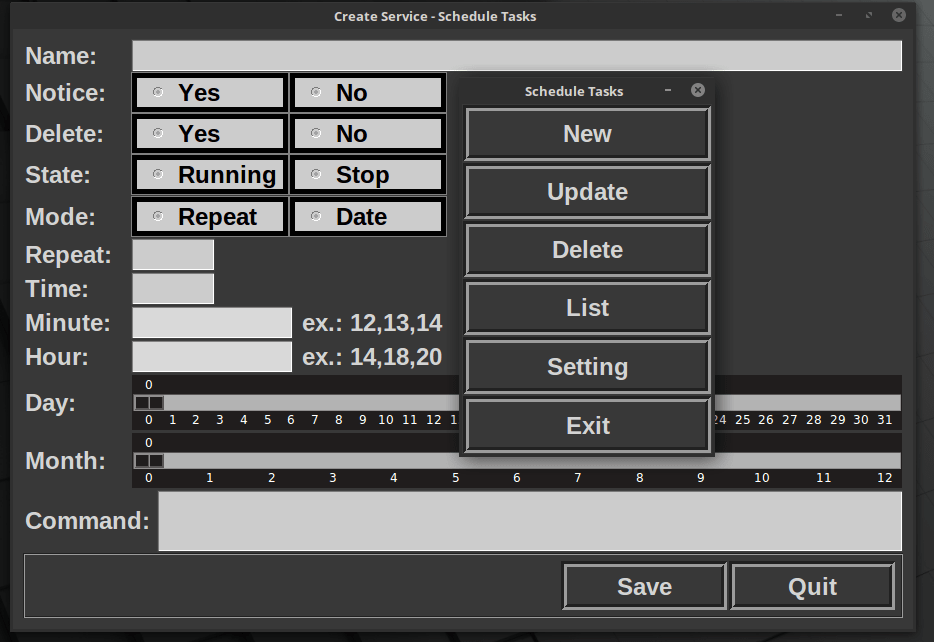
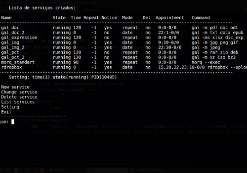

Graduado em Análise e Desenvolvimento de Sistemas

Interface gráfica do programa Schedule Tasks
O Schedule Tasks é um programa de agendamento de tarefas. Ele foi escrito em Python 3.X.

Interface de linha de comando do programa Schedule Tasks
A interface de comando de linha é uma forma de interação rápida de manipulação dos serviços.
Interface gráfica do programa Schedule Tasks
Interface gráfica do programa Schedule Tasks
Interface gráfica do programa Schedule Tasks
Interface gráfica do programa Schedule Tasks